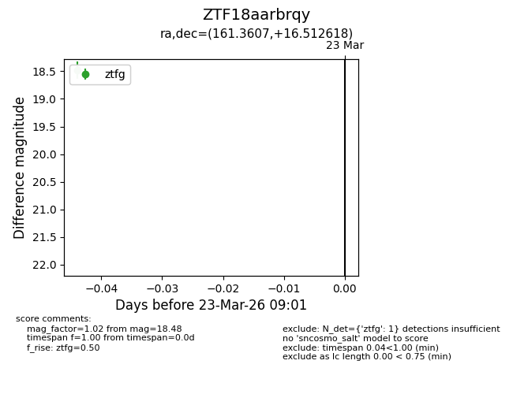
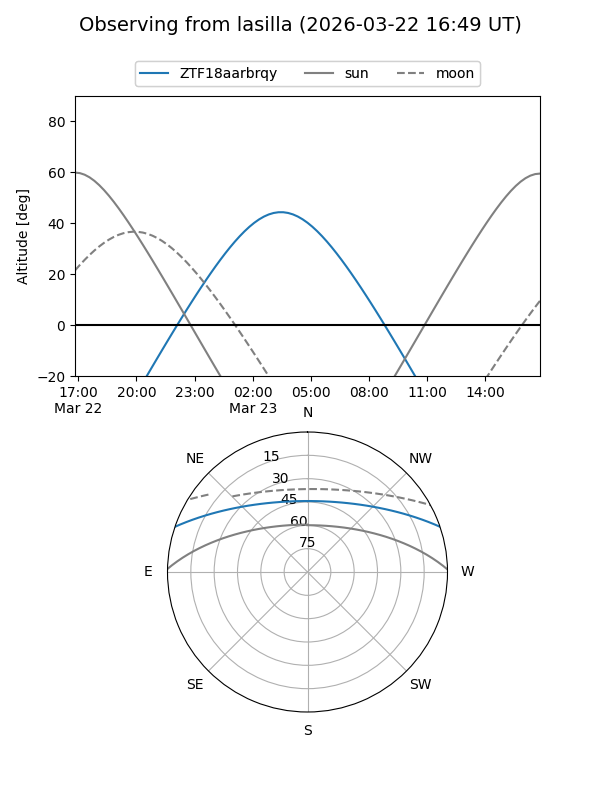
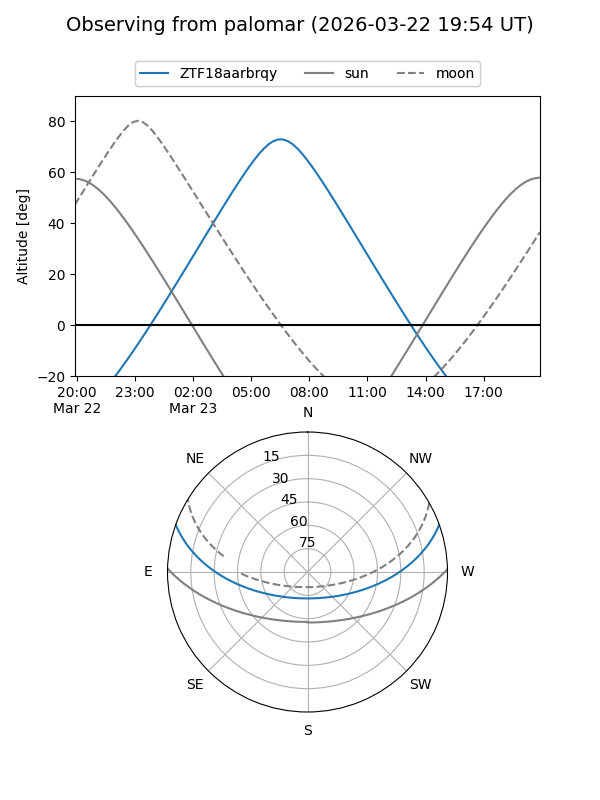

ZTF18aarbrqy
Target ZTF18aarbrqy at 2026-03-23 09:03
Aliases and brokers:
FINK: link
Lasair: link
ALeRCE: link
alt names
ZTF18aarbrqy (ztf,fink_ztf)
Coordinates:
equatorial (ra, dec) = 161.3607,+16.51262
equatorial (HMS+DMS) = 10:45:26.56,+16:30:45.43
galactic (l, b) = (226.3820,+58.99862)
Flags:
Photometry:
last ztfg=18.48
1 ztfg detections
Lightcurve

Visibility


Additional plots